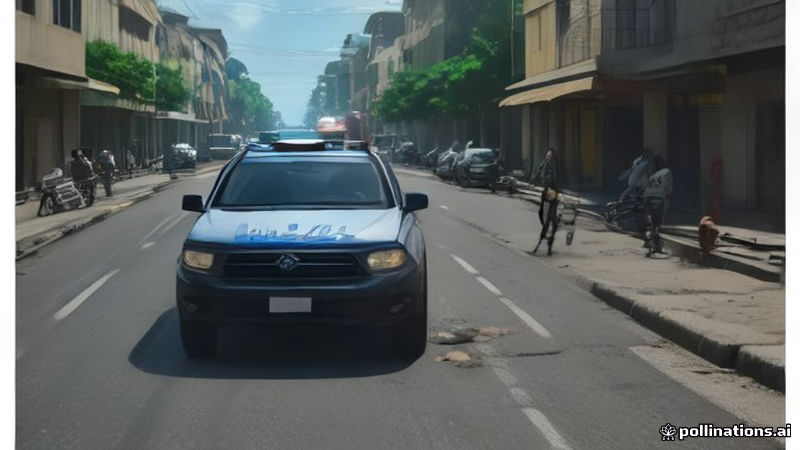

হাইতি পুলিশের রেইডে মার্টিসাঁতে কমপক্ষে ৩৪ সন্দেহভাজন গ্যাং সদস্য নিহত
Al Jazeera English · 2026-11-19
AI-generated illustrationমার্টিসাঁতে গ্যাং নিয়ন্ত্রিত মূল রুটে পরিচালিত রেইডে কমপক্ষে ৩৪ সন্দেহভাজন গ্যাং সদস্যের মৃত্যু হয়েছে।
হাইতি পুলিশ জানিয়েছে যে মার্টিসাঁ অঞ্চলকে লক্ষ্য করে পরিচালিত রেইডে কমপক্ষে ৩৪ সন্দেহভাজন গ্যাং সদস্য নিহত হয়েছে। এই এলাকা ২০২১ সাল থেকে গ্যাংয়ের নিয়ন্ত্রণে রয়েছে এবং পোর্ট‑অ‑প্রিন্সের প্রধান রওনা পথের মধ্যে পড়ে।
Al Jazeera English অনুযায়ী, কর্তৃপক্ষ গ্যাংয়ের কৌশলগত করিডোরে নিয়ন্ত্রণ ভাঙার জন্য রেইডটি পরিচালনা করেছে। উচ্চ সংখ্যক প্রাণহানি শহরের চলমান সহিংসতার মোকাবেলায় নিরাপত্তা অভিযানকে কতটা তীব্র করে তুলছে তা প্রকাশ করে।
Read the original reporting at the links above.
English version
At least 34 suspected gang members killed in Haiti police raid on Martissant
Police in Haiti announced that a raid in the Martissant district resulted in the deaths of at least 34 individuals they identified as gang members. The operation focused on an area that has been under gang control since 2021 and lies on a major exit route from the capital, Port‑au‑Prince.
According to Al Jazeera English, authorities said the raid was intended to disrupt the gangs’ hold on the strategic corridor. The high casualty figure underscores the intensity of the security effort in a city plagued by violence.